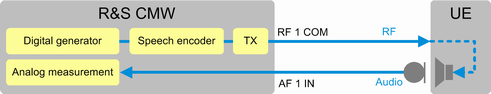
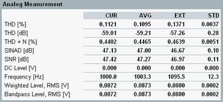
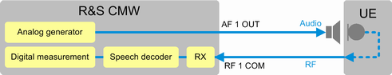
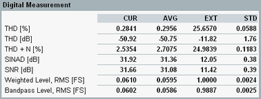

This section describes how to perform audio tests for an established VoLTE connection. As audio test signal, a single tone is used. The tests analyze mainly the harmonic distortions and noise of an audio signal.
The tests are performed in two steps. The first step is a speaker test, the second step a microphone test. You can perform speaker- and microphone tests with a stand-alone R&S CMW. No additional test instruments are required.
The digital generator of the audio board feeds a 1000 Hz audio tone to the speech encoder. The tone is transmitted to the UE via the already established VoLTE connection. The UE demodulates and decodes the signal and feeds the resulting audio signal to its speaker.
The analog measurement of the audio board analyzes the audio signal of the speaker.
If the UE has a speaker jack, headphones jack or headset jack, connect it directly to the AF 1 IN port. Alternatively, you can use a microphone and connect it to AF 1 IN. You could, for example, use the microphone of an artificial head, designed for this purpose.

To prepare and execute the speaker test, proceed as follows:
Open the "Audio Measurement 1" view:
On the task bar, press "Audio Measurement 1".
At the top, select the scenario "Microphone- and Speakertest".
Connect the UE speaker to AF 1 IN.
Select the "Digital Generator" softkey and press ON | OFF.
The generator is started.
Wait until the softkey indicates the "ON" state.
A 1000 Hz tone is generated, fed to the speech encoder and transmitted to the UE via the VoLTE connection.
Select the "Analog Meas" softkey and press ON | OFF.
The measurement is started.
Wait until the softkey indicates the "RUN" state.
Evaluate the measurement results, for example the total harmonic distortion (THD) and the signal to noise ratio (SNR) of the audio signal.

Stop the generator and the measurement:
Select the "Analog Meas" softkey and press ON | OFF.
Select the "Digital Generator" softkey and press ON | OFF.
In the following test, the analog generator of the audio board feeds a 1000 Hz audio tone to the microphone of the UE.
The UE encodes the audio signal and modulates the RF signal. It transmits the RF signal via the already established VoLTE connection to the R&S CMW.
The R&S CMW demodulates and decodes the signal. The digital audio measurement of the audio board analyzes the resulting audio signal.
If the UE has a microphone jack or a headset jack, connect it directly to the AF 1 OUT port. Alternatively, you can use a speaker and connect it to AF 1 OUT. You could, for example, use the speaker of an artificial head.

To prepare and execute the microphone test, proceed as follows:
Connect the UE microphone to AF 1 OUT.
Select the "Digital Meas" tab.
Press the "Analog Generator" softkey.
Press the "Level" hotkey. Enter a value compatible to the microphone input of your UE, for example 100 mV.
Press ON | OFF.
The generator is started.
Wait until the softkey indicates the "ON" state.
A 1000 Hz tone is generated and fed to the UE microphone.
Select the "Digital Meas" softkey and press ON | OFF.
The measurement is started.
Wait until the softkey indicates the "RUN" state.
Evaluate the measurement results, for example the total harmonic distortion (THD) and the signal to noise ratio (SNR) of the audio signal.

Stop the generator and the measurement:
Select the "Analog Meas" softkey and press ON | OFF.
Select the "Digital Generator" softkey and press ON | OFF.